Название файлов
Шаблоны названий файлов для сдачи. Обратите внимание на расширение файлов!
Базовое оформление
Настройки, которые применяются к основному тексту отчёта.
Как настроить
На рисунке ниже представлена настройка шрифта и выравнивания.
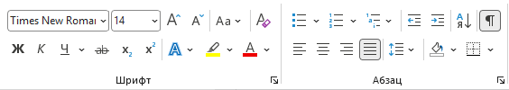
По клику на стрелку в правом нижнем углу области настроек "абзац" открывается окно для настройки остальных параметров. Пример заполнения на рисунке ниже.
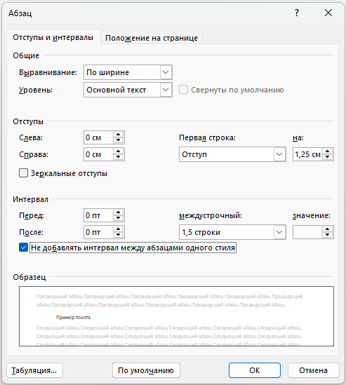
Для настройки полей перейдите Макет - Поля - Настраиваемые поля. Введите необходимые значения.
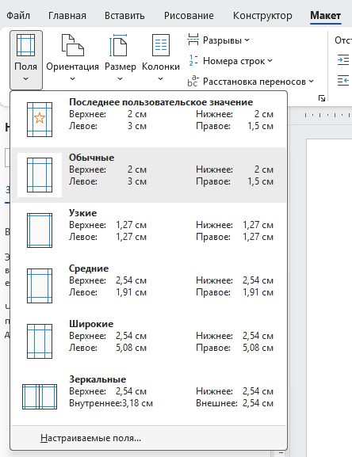
Правильный пример
На рисунке ниже представлен правильный пример оформления основного текста
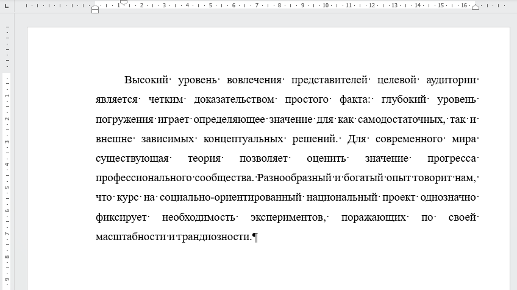
Обратите внимание на линейки над страницей. По ним видно, что абзацный отступ 1.25 см, левое поле 3см, правое поле 1см, верхнее поле 2см.
Абзацный отступ можно также настроить переставив маркеры на линейке в положение как на рисунке.
Чтобы включить линейки: Вид - Отображение - Линейки
Ошибки
Абзацный отступ больше чем нужно - 2см
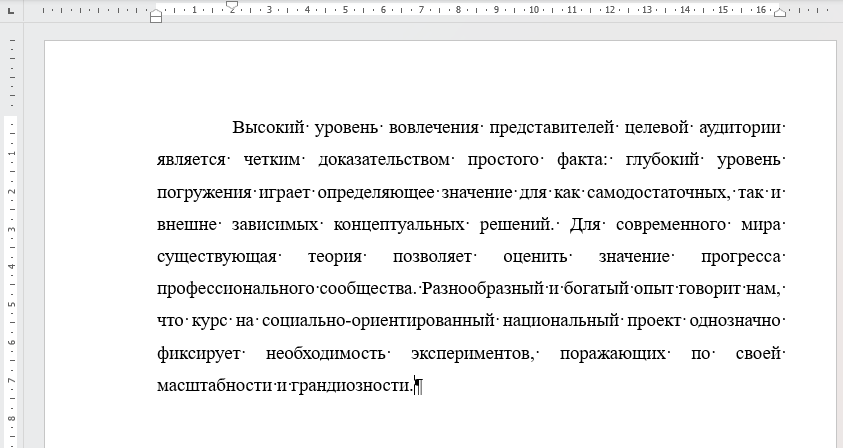
Нет выравнивания по ширине
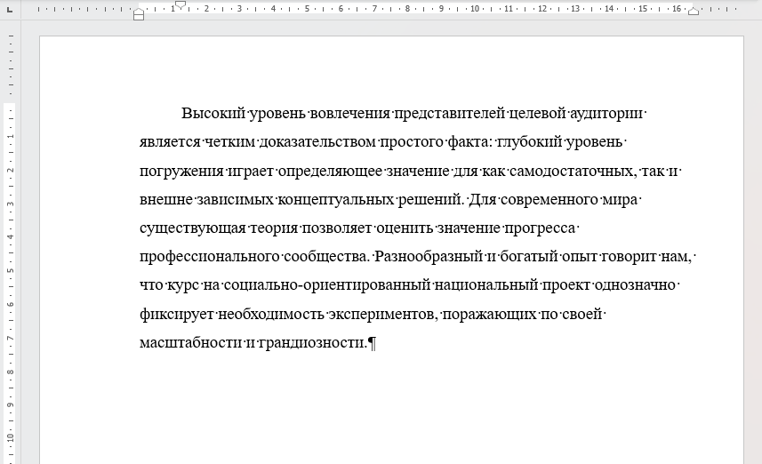
Нумерация страниц
Настройка нумерации страниц, работа с разделами и колонтитулами
Как настроить
Исходное состояние страниц без нумерации
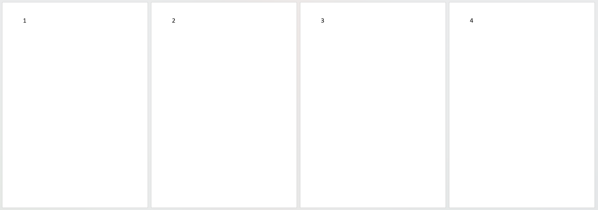
Добавляем нумерацию: Вставка - Колонтитулы - Номер страницы - Внизу станицы - Номер страницы по центру
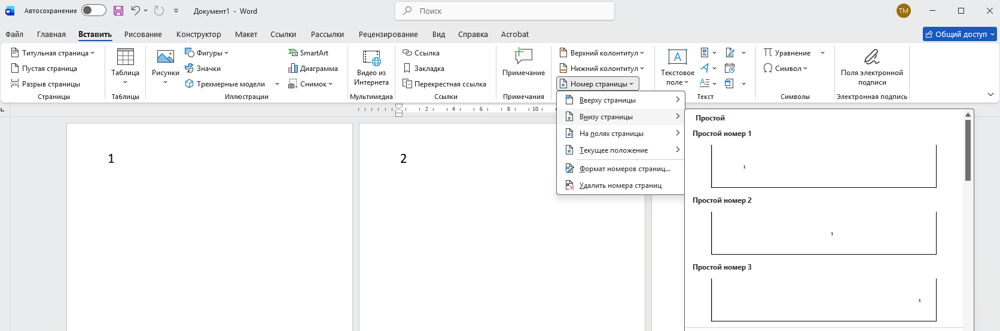
Дважды кликнув на появившийся номер страницы переходим в режим редактирования колонтитулов, удаляем лишние строки и ставим нужные настройки шрифта: Times New Roman, обычное начертание, чёрный цвет, 14 пт, выравнивание по центру, абзацный отступ 0см.
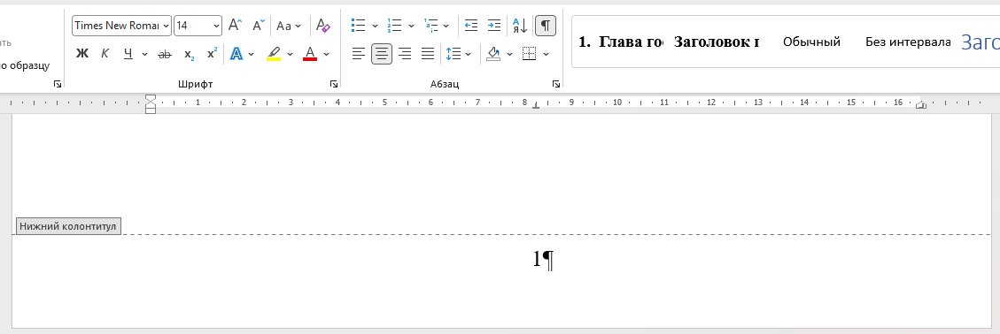
В конце страницы перед Введением (Содержание) добавляем разрыв раздела: Макет - Параметры страницы - Разрывы - Следующая страница
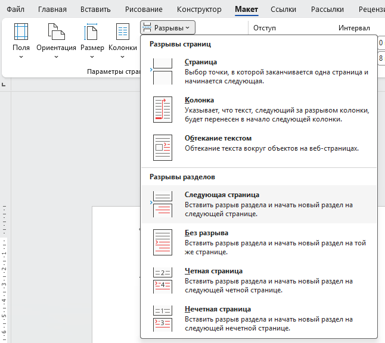
Пример результата на рисунке ниже. Чтобы представленные ниже разделители нужно включить Непечатаемые символы. Перейдите на вкладку «Главная», в группе «Абзац» нажмите на кнопку с символом ¶
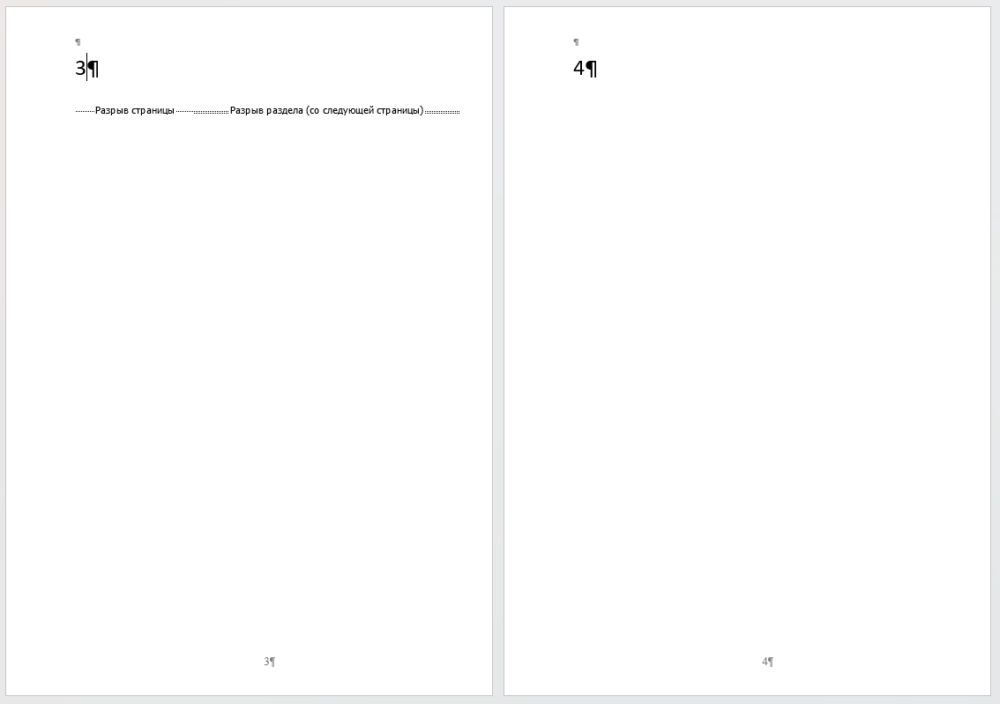
Снова зайдите в режим редактирования колонтитулов дважды кликнув на номер страницы. Выберите страницу из 2 раздела и выключите параметр: Колонтитулы - Переходы - Как в предыдущем. После этого вы можете выделить номер страницы в первом разделе и удалить его. Выключение параметра "Как в предыдущем" позволит сохранить нумерацию во 2 разделе.
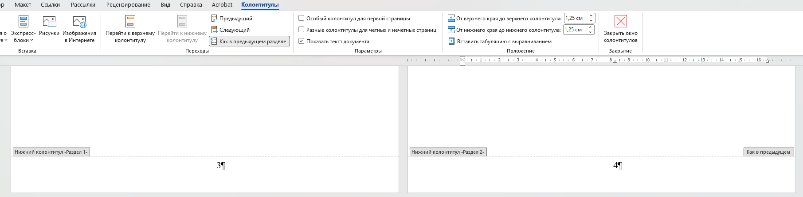
Ниже на примере видно, что нумерация сохранилась только на 4 странице
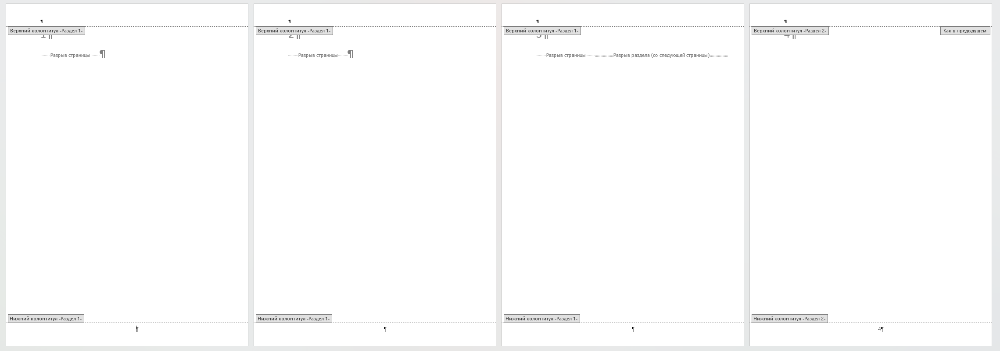
Далее настройте правильный номер страницы: Вставка - Колонтитулы - Номер страницы - Формат номеров страниц
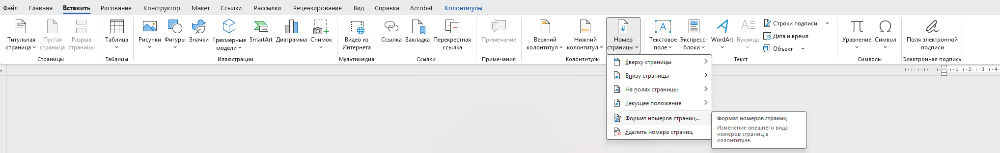
Установите нужное значение. Обычно Введение - 4 страница
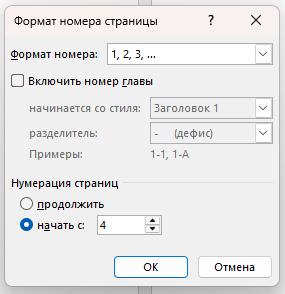
При подсчете страниц, учитывайте титульник и задание. Обратите внимание, что задание считается как одна страница, т.к. печатается с двух сторон на одном листе!
Титульник и задание
Работа с готовыми шаблонами, вставка в отчет и печать для сдачи
Как настроить
Пошаговая инструкция с картинками
Пошаговая инструкция с картинками
Реферат
Кратко описывает содержание и основные результаты работы.
Ключевые слова: ОТЧЁТ, ОФОРМЛЕНИЕ, ГОСТ, WORD, ТАБЛИЦЫ, РИСУНКИ, ФОРМУЛЫ.
Цель работы: систематизировать требования к оформлению отчёта и представить их в удобном для студента виде.
Как настроить
Пошаговая инструкция с картинками
Пошаговая инструкция с картинками
Содержание
Показывает структуру работы и страницы, на которых расположены её элементы.
Как настроить
Пошаговая инструкция с картинками
Пошаговая инструкция с картинками
Заголовки разделов
Номер и название должны быть оформлены единообразно на протяжении всей работы.
Текст подраздела начинается после заголовка и оформляется в соответствии с базовыми параметрами основного текста.
1.2 Анализ существующих решенийКак настроить
Пошаговая инструкция с картинками
Пошаговая инструкция с картинками
Перечисления
Способ оформления списка выбирают в зависимости от его структуры.
Для подготовки отчёта необходимо:
- настроить параметры страницы;
- оформить заголовки разделов;
- проверить рисунки и таблицы;
- проверить список источников.
Как настроить
Пошаговая инструкция с картинками
Пошаговая инструкция с картинками
Рисунки
Рисунок должен быть связан с текстом, иметь номер и понятное название.
Макет главной страницы представлен на рисунке 1.
Рисунок 1 — Макет главной страницы сайта
Как настроить
Пошаговая инструкция с картинками
Пошаговая инструкция с картинками
Формулы и уравнения
Формулы отделяются от текста и сопровождаются необходимыми пояснениями.
где S — площадь прямоугольника; a — длина; b — ширина.
Как настроить
Пошаговая инструкция с картинками
Пошаговая инструкция с картинками
Таблицы
Таблица должна иметь ссылку в тексте, номер и название.
| Показатель | Вариант 1 | Вариант 2 |
|---|---|---|
| Время обработки | 12 с | 8 с |
| Количество операций | 15 | 10 |
Как настроить
Пошаговая инструкция с картинками
Пошаговая инструкция с картинками
Приложения
В приложения выносят объёмные и вспомогательные материалы.
Как настроить
Пошаговая инструкция с картинками
Пошаговая инструкция с картинками
Список использованных источников
Каждый источник из списка должен быть связан с его упоминанием в тексте.
В тексте: «Требования к структуре отчёта рассматриваются в источнике [1]».
ГОСТ. Общие требования к оформлению документации. — М.: Издательство, 2024.
Как настроить
Пошаговая инструкция с картинками
Пошаговая инструкция с картинками
Финальная проверка
Перед сдачей пройдите список сверху вниз и исправьте найденные несоответствия.